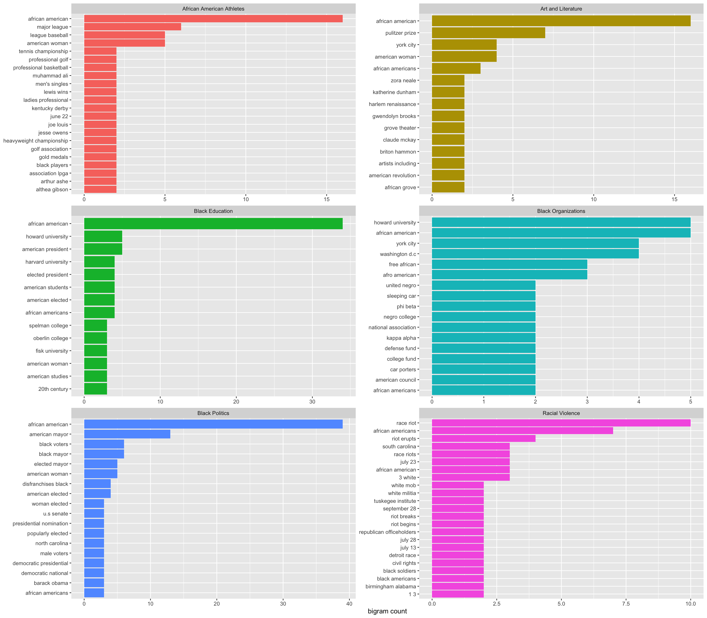

blackpast <- read_csv("blackpast.csv") %>%
group_by(subject) %>%
mutate(count = n()) %>%
ungroup() %>%
filter(dense_rank(-count) < 6)Celebrating Juneteenth
Data
BlackPast.org and Vox has an article about the importance of Juneteenth as a moment and what the holiday commemorates.
BlackPast is dedicated to providing a global audience with reliable and accurate information on the history of African America and of people of African ancestry around the world. We aim to promote greater understanding through this knowledge to generate constructive change in our society.
Events
Using the tidytext, I’ll investigate bi-grams (pairs of words) in the events column of the blackpast.csv dataframe on African American and those with African ancestry around the world.
black_bigrams <- blackpast %>%
dplyr::select(events, subject) %>%
group_by(subject) %>%
unnest_tokens(bigram, events, token = "ngrams", n = 2, to_lower = TRUE)
bigrams_sep <- black_bigrams %>%
separate(bigram, c("word1", "word2"), sep = " ")
bigrams_filtered <- bigrams_sep %>%
dplyr::filter(!word1 %in% stop_words$word) %>%
dplyr::filter(!word2 %in% stop_words$word)
bigram_counts <- bigrams_filtered %>%
count(word1, word2, sort = TRUE)
bigram_counts# A tibble: 1,870 × 4
# Groups: subject [6]
subject word1 word2 n
<chr> <chr> <chr> <int>
1 Black Politics african american 39
2 Black Education african american 34
3 African American Athletes african american 16
4 Art and Literature african american 16
5 Black Politics american mayor 13
6 Racial Violence race riot 10
7 Art and Literature pulitzer prize 7
8 Racial Violence african americans 7
9 African American Athletes major league 6
10 Black Politics black mayor 6
# … with 1,860 more rowsbigrams_united <- bigrams_filtered %>%
unite(bigram, word1, word2, sep = " ")
sorted_bigrams <- bigrams_united %>%
count(subject, bigram, sort = TRUE) %>%
top_n(10) %>%
group_by(subject) %>%
arrange(subject, n) %>%
unite("subj_bigram", subject, bigram, sep = "_", remove = FALSE) %>%
data.frame() %>%
mutate(subj_bigram = factor(subj_bigram, levels = subj_bigram))
sorted_bigrams %>%
group_by(subject) %>%
ggplot(aes(x = subj_bigram, y = n, fill = subject)) +
geom_col(show.legend = FALSE) +
labs(x = NULL, y = "bigram count") +
coord_flip() +
scale_x_discrete(breaks = sorted_bigrams$subj_bigram,
labels = sorted_bigrams$bigram ) +
facet_wrap(~subject, ncol = 2, scales = "free") 